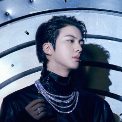
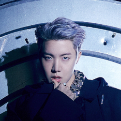

Kim Namjoon
Conhecido como RM.Lider,rapper principal,compositor e integra a rap line.
-
Data de nascimento : 12 de setembro de 1994.Siga no Instagram
Kim SeokJin
Conhecido como Jin.Integra a vocaline.
-
Data de nascimento: 4 de dezembro de 1992.Siga no Instagram
Min Yoongi
Conhecido como Suga e Agust D, é rapper principal, compositor e produtor musical.Integra a rap line.
-
Data de nascimento:9 de março de 1993.Siga no Instagram
Jung Hoseok
Conhecido como Jhope e carinhosamente chamado pelos fãs de sol, é rapper líder, dançarino principal e lider. Intregante da rap line.
-
Data de nascimento: 18 de fevereiro de 1994. Siga no Instagram
Park Jimin
Conhecido como Jimin e carinhosamente apelidado pelos fãs como Mochi,é o vocalista principal,dançarino principal.Integra a vocaline.
-
Data de nascimento : 13 de outubro de 1995.Siga no Instagram
Kim Taehyung
Conhecido como V e carinhosamento apelidado pelos fãs e pelo grupo de Tete, Taetae,é o Vocalista.Integra a vocaline.
-
Data de nascimento : 30 de dezembro de 1995.Siga no Instagram
Jeon JungKook
Conhecido com JK,é vocalista principal, dançarino principal, rapper secundário, centro/rosto do grupo e o maknae.Integra a vocaline
-
Data de nascimento : 1 de setembro de 1997